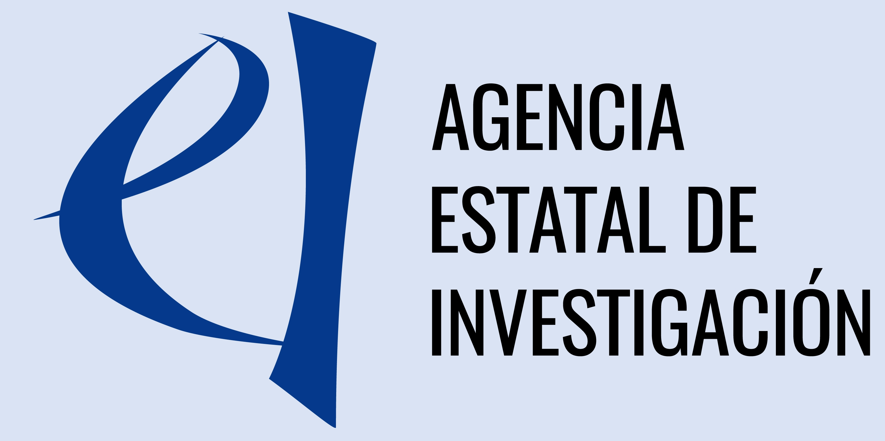
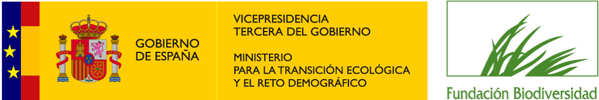
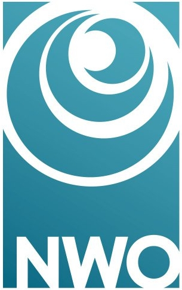
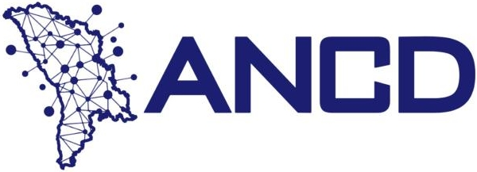

Acknowledgement
This research is funded by Biodiversa+, the European Biodiversity Partnership, in the context of the BRET project under the 2024–2025 BiodivTransform joint call. It was co-funded by the European Commission (GA No. 101052342) and the following funding organizations: Formas Sweden, AEI Spain, FB Spain, NWO Netherlands, ANCD Moldova, and MVZI Slovenia.




External Advisory Board
The BRET project benefits from guidance provided by an external advisory board composed of experts from academia, international organizations, and policy institutions. Their perspectives help strengthen the scientific robustness and policy relevance of the project and support dialogue between research, policy, and practice.
-
Dr. Xianli Zhu
Consultant, Secretariat of the Convention on Biological Diversity (CBD), UNEP -
Prof. David P. Edwards
Professor of Plant Ecology, University of Cambridge -
Mr. Jeppe Krommes-Ravnsmed
Chief Consultant, Herlev Municipality, Denmark -
Dr. Zhuolun Chen
Senior Advisor, UNEP Copenhagen Climate Centre -
Mr. Luca Battistella
Project Lead, European Environment Agency -
Dr. Jyoti Painuly
Senior Energy Planner, UNEP Copenhagen Climate Centre -
Dr. Lifeng Li
Director, Land and Water Division, FAO -
Dr. Veiko Lehsten
Associate Professor, Mid Sweden University
Key Collaborative Stakeholders
The BRET project collaborates with key governmental agencies, protected area managers, and industry partners who contribute practical expertise and support stakeholder engagement. Their involvement helps connect scientific research with real-world renewable energy development and biodiversity conservation. Through this collaboration, partners gain early access to emerging scientific evidence and practical knowledge on biodiversity-positive renewable energy transitions, supporting informed decision-making and encouraging broader participation from the renewable energy sector.
-
Government of Aragón – Directorate-General for Natural Environment, Hunting and Fishing
Department of Environment and Tourism, Zaragoza, Spain -
Zaragoza Provincial Government – Environment and Tourism Service
Saladas de Chiprana Natural Reserve, Zaragoza, Spain -
GALP Renewables (Galp New Energies S.A.)
Renewable energy developer providing access to photovoltaic facilities for biodiversity research